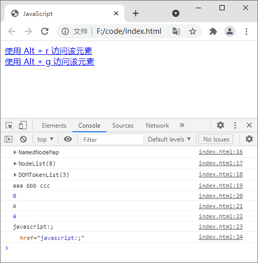

首页 > JavaScript
JS Element对象（元素对象）
通过《文档对象模型》一节的学习我们知道，当网页加载时，浏览器就会自动创建当前页面的文档对象模型（DOM），并将文档的所有部分（例如元素、属性、文本等）组织成一个逻辑树结构（类似于族谱），逻辑树的每一个分支的终点称为一个节点，每个节点都包含一个对象，这个对象就是我们本节要介绍的 Element 对象。
使用 Document 对象中提供的方法（例如 getElementsByTagName()、getElementById()、getElementsByClassName() 等）可以得到 Element 对象，在 Element 对象中同样也提供了一系列方法和属性，来操作文档中的元素或者元素中的属性。
示例代码如下：
使用 Document 对象中提供的方法（例如 getElementsByTagName()、getElementById()、getElementsByClassName() 等）可以得到 Element 对象，在 Element 对象中同样也提供了一系列方法和属性，来操作文档中的元素或者元素中的属性。
Element 对象中的属性
下表中列举了 JavaScript Element 对象中提供的属性及其描述：| 属性 | 描述 |
|---|---|
| element.accessKey | 设置或返回一个访问单选按钮的快捷键 |
| element.attributes | 返回一个元素的属性数组 |
| element.childNodes | 返回元素的一个子节点的数组 |
| element.children | 返回元素中子元素的集合 |
| element.classList | 返回元素中类名组成的对象 |
| element.className | 设置或返回元素的 class 属性 |
| element.clientHeight | 返回内容的可视高度（不包括边框，边距或滚动条） |
| element.clientWidth | 返回内容的可视宽度（不包括边框，边距或滚动条） |
| element.contentEditable | 设置或返回元素的内容是否可编辑 |
| element.dir | 设置或返回一个元素中的文本方向 |
| element.firstChild | 返回元素中的第一个子元素 |
| element.id | 设置或者返回元素的 id |
| element.innerHTML | 设置或者返回元素的内容 |
| element.isContentEditable | 返回元素内容是否可编辑，如果可编辑则返回 true，否则返回 false |
| element.lang | 设置或者返回一个元素的语言 |
| element.lastChild | 返回元素的最后一个子元素 |
| element.namespaceURI | 返回命名空间的 URI |
| element.nextSibling | 返回指定元素之后的兄弟元素，两个元素在 DOM 树中位于同一层级（包括文本节点、注释节点） |
| element.nextElementSibling | 返回指定元素之后的兄弟元素，两个元素在 DOM 树中位于同一层级（不包括文本节点、注释节点） |
| element.nodeName | 返回元素名称（大写） |
| element.nodeType | 返回元素的节点类型 |
| element.nodeValue | 返回元素的节点值 |
| element.offsetHeight | 返回元素的高度，包括边框和内边距，但不包括外边距 |
| element.offsetWidth | 返回元素的宽度，包括边框和内边距，但不包括外边距 |
| element.offsetLeft | 返回元素在水平方向的偏移量 |
| element.offsetParent | 返回距离该元素最近的进行过定位的父元素 |
| element.offsetTop | 返回元素在垂直方向的偏移量 |
| element.ownerDocument | 返回元素的根元素（文档对象） |
| element.parentNode | 返回元素的父节点 |
| element.previousSibling | 返回元素之前的兄弟元素，两个元素在 DOM 树中位于同一层级（包括文本节点、注释节点） |
| element.previousElementSibling | 返回元素之前的兄弟元素，两个元素在 DOM 树中位于同一层级（不包括文本节点、注释节点） |
| element.scrollHeight | 返回元素的完整高度（包括被滚动条隐蔽的部分） |
| element.scrollLeft | 设置或返回元素滚动条距离元素左侧的距离 |
| element.scrollTop | 设置或返回元素滚动条距离元素上方的距离 |
| element.scrollWidth | 返回元素的完整宽度（包括被滚动条隐蔽的部分） |
| element.style | 设置或返回元素的样式属性 |
| element.tabIndex | 设置或返回元素的标签顺序 |
| element.tagName | 以字符的形式返回元素的名称（大写） |
| element.textContent | 设置或返回某个元素以及其中的文本内容 |
| element.title | 设置或返回元素的 title 属性 |
| element.length | 返回对象的长度 |
Element 对象中的方法
下表中列举了 JavaScript Element 对象中提供的方法及其描述：| 方法 | 描述 |
|---|---|
| element.addEventListener() | 为指定元素定义事件 |
| element.appendChild() | 为元素添加一个新的子元素 |
| element.cloneNode() | 克隆某个元素 |
| element.compareDocumentPosition() |
比较当前元素与指定元素在文档中的位置，返回值如下：
|
| element.focus() | 使元素获得焦点 |
| element.getAttribute() | 通过属性名称获取指定元素的属性值 |
| element.getAttributeNode() | 通过属性名称获取指定元素得属性节点 |
| element.getElementsByTagName() | 通过标签名获取当前元素下的所有子元素的集合 |
| element.getElementsByClassName() | 通过类名获取当前元素下的子元素的集合 |
| element.hasAttribute() | 判断元素是否具有指定的属性，若存在则返回 true，不存在则返回 false |
| element.hasAttributes() | 判断元素是否存在任何属性，若存在则返回 true，不存在则返回 false |
| element.hasChildNodes() | 判断一个元素是否具有子元素，有则返回 true，没有则返回 false |
| element.hasFocus() | 判断元素是否获得了焦点 |
| element.insertBefore() | 在已有子元素之前插入一个新的子元素 |
| element.isDefaultNamespace() | 如果指定 namespaceURI 是默认的则返回 true，否则返回 false。 |
| element.isEqualNode() | 检查两个元素是否相等 |
| element.isSameNode() | 检查当前元素与指定元素是否为同一元素 |
| element.isSupported() | 判断当前元素是否支持某个特性 |
| element.normalize() | 合并相邻的文本节点，并删除空的文本节点 |
| element.querySelector() | 根据 CSS 选择器，返回第一个匹配的元素 |
| document.querySelectorAll() | 根据 CSS 选择器，返回所有匹配的元素 |
| element.removeAttribute() | 从元素中删除指定的属性 |
| element.removeAttributeNode() | 从元素中删除指定的属性节点 |
| element.removeChild() | 删除一个子元素 |
| element.removeEventListener() | 移除由 addEventListener() 方法添加的事件 |
| element.replaceChild() | 替换一个子元素 |
| element.setAttribute() | 设置或者修改指定属性的值 |
| element.setAttributeNode() | 设置或者修改指定的属性节点 |
| element.setUserData() | 在元素中为指定键值关联对象 |
| element.toString() | 将元素转换成字符串 |
| nodelist.item() | 返回某个元素基于文档树的索引 |
示例代码如下：
<!DOCTYPE html>
<html lang="en">
<head>
<meta charset="UTF-8">
<title>JavaScript</title>
</head>
<body onload="accesskey()">
<a id="r" class="aaa bbb ccc" href="javascript:;">使用 Alt + r 访问该元素</a><br>
<a id="g" href="javascript:;">使用 Alt + g 访问该元素</a>
<script type="text/javascript">
function accesskey(){
document.getElementById('r').accessKey="r"
document.getElementById('g').accessKey="g"
}
var ele = document.getElementById('r');
console.log(ele.attributes); // 输出：NamedNodeMap {0: id, 1: href, id: id, href: href, length: 2}
console.log(document.body.childNodes); // 输出：NodeList(7) [text, a#r, br, text, a#g, text, script]
console.log(ele.classList); // 输出：DOMTokenList(3) ["aaa", "bbb", "ccc", value: "aaa bbb ccc"]
console.log(ele.className); // 输出：aaa bbb ccc
console.log(ele.clientHeight); // 输出：DOMTokenList(3) ["aaa", "bbb", "ccc", value: "aaa bbb ccc"]
console.log(ele.tagName); // 输出：A
console.log(ele.compareDocumentPosition(document.getElementById('g'))); // 输出：4
console.log(ele.getAttribute('href')); // 输出：javascript:;
console.log(ele.getAttributeNode('href')); // 输出：href="javascript:;"
</script>
</body>
</html>
运行结果如下图所示：

图1：Element 对象中方法和属性使用演示
图1：Element 对象中方法和属性使用演示
关注公众号「站长严长生」，在手机上阅读所有教程，随时随地都能学习。内含一款搜索神器，免费下载全网书籍和视频。

微信扫码关注公众号